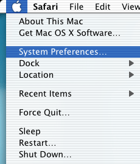
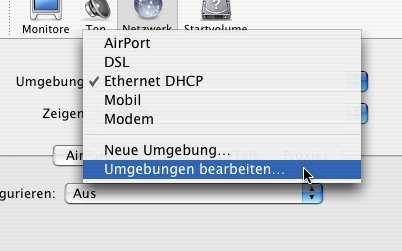
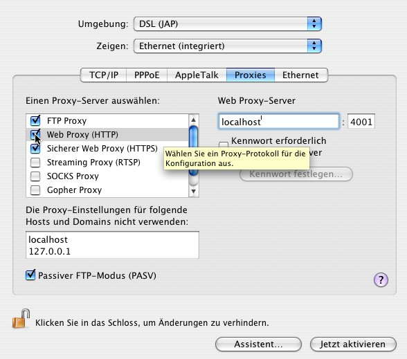

Settings for Various Browsers
JAP Setup for Safari
Proxy settings cannot be entered directly in the standard MacOS X browser, Safari. Instead, the proxy must be changed in the network system settings. The following describes how to set up a new network location in order to provide simple switching between using JAP and standard, non-anonymous browsing.
To set up JAP for Safari, do the following steps:
1.) Choose the apple from the menu bar, then "System Preferences".

2.) In the window that appears, click on "Network" in the "Internet & Network" group.

3.) Now, in the "Location" field, click on "Edit Locations...".

4.) Choose the location with which you usually connect to the internet. In this example, the location is called "DSL". Click on "Copy". Rename this new copy so that you can recognize it later. In this example, the renamed location is called "DSL (JAP)". Then click on "Finished".

5.) Now choose the location you just created. In the field "Show", choose the network device with which you make the connection to the internet. In the example, it's called "Ethernet (integriert)".
Now click on "Proxies". In the list "Choose a proxy server", mark the fields for "FTP Proxy", "Web Proxy", and "Secure Web Proxy". Each time you mark one of these fields, enter "localhost" and "4001" into the fields on the right side.
Finally, enter "localhost" and "127.0.0.1" into the field "Do not use proxy settings for the following hosts and domains".
When you've finished entering these settings, click on "Activate now" to change to the newly created location and use JAP as a proxy in Safari.

Note: If you set a different listener port in JAP, you'll have to enter this port here too, rather than 4001.
If you no longer want to use JAP, you can change to the old network location using the apple menu as previously described.